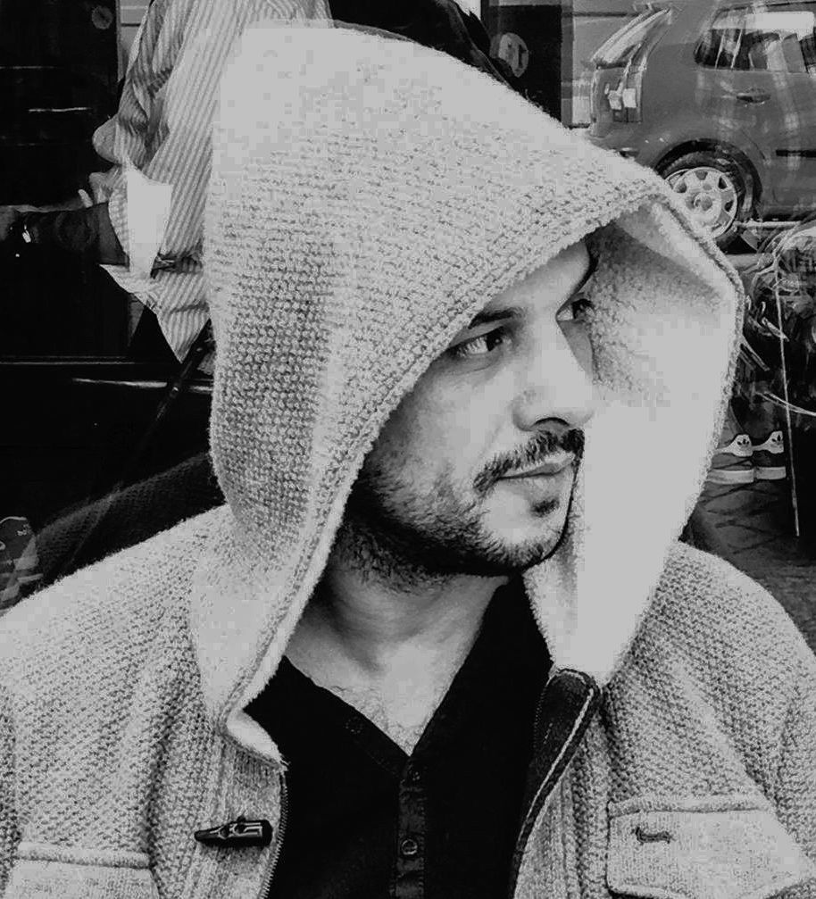
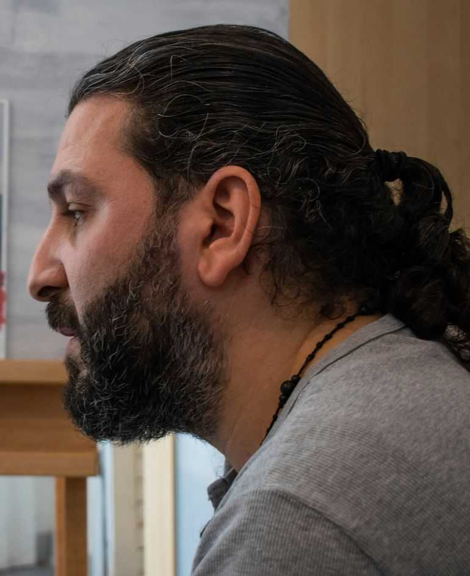

La casa de la Diala Brisly no és a Damasc, ni a París, ni a Berlín. No és cap indret del món ni es troba a cap ciutat. La dibuixant...
Mohammad Abu Hajar
Raper
Nascut a Tartous, el Mohammad Abu Hajar és una de les primeres cinc persones que es va dedicar al món del rap a Síria. Tot va començar quan va...
Diana Abdulkarim
Cineasta
Una branca cau del seu arbre i va a parar al riu, on és arrossegada pel corrent fins que una persona anònima l’agafa amb cura i la col·loca en un altre arbre...
Hamid Sulaiman
Dibuixant
“Soc l’únic sirià que ha escrit una novel·la gràfica sobre el que està passant a Síria”, afirma, satisfet, el Hamid Sulaiman. Nascut a Damasc, el dibuixant està...
Kefah Ali Deeb
Pintora i escriptora
La porta d'Ishtar és una de les vuit entrades que permetien l’accés a la ciutat de Babilònia, situada a l’antiga Mesopotàmia. Es tracta...
Khaled Barakeh
Artista conceptual

Durant els tres mesos que va viure a Frankfurt, el Khaled Barakeh va estar-se en un pis on tots els mobles flotaven. L’artista va...
Medhat AlDaabal
Ballarí
Encara que des dels 17 anys ja tenia clar que volia dedicar-se al
món de la dansa, el Medhat Aldaabal va decidir estudiar a
l’Institut Clínic per a Extremitats Artificials. La professió a
què s’encaminava amb...
Michaele Daoud
Pintor i artista visual
El Michaele Daoud no busca la bellesa a les seves pintures. O com a mínim no la bellesa entesa com a harmonies de colors, perspectives o paisatges agradables. De fet, ell mateix...
Ahmad Ismael
Pintor
L’Ahmad no es considera un artista. Quan era petit li agradava calcar els còmics que es comprava, i també solia fer petites escultures de fang que es trencaven dies després perquè ningú li havia ensenyat a fer-ne.
Anwar Al-Atrash
Pintor

“No esperis que et rebin amb una catifa vermella” és una frase que l’Anwar Al Atrash, nascut a Damasc el 1979, ha sentit moltes vegades. Abans d’arribar a Alemanya, on encara viu, l’havia llegit a internet.
Athrodeel
Grup de música
L’idioma siríac és un antic dialecte de l’arameu que va aparèixer al segle I d.C. a la ciutat d’Edessa, situada a la frontera entre Turquia i Síria.
Bassam Dawood
Hakawati
Vesteix amb una jalabia -una túnica tradicional- i porta un tarbuix o fes al cap i un bastó a la mà.
Maya Rabou
Pintora
Per la Maya Rabou, pintar és una manera de reivindicar-se com a persona i com a dona. En certa manera, és com una teràpia, perquè li permet expressar el seu interior i parlar de tot el que ha patit, per desfer-se “de tots els sentiments negatius”.
Bilal Malik Al-Shami
Dibuixant
Cada dia agafava carbó i colors i buscava el millor racó entre les ruïnes de la ciutat de Daraya, al sud-oest de Síria. Expulsava la pols de la paret escollida i la netejava per convertir-la en el seu llenç.